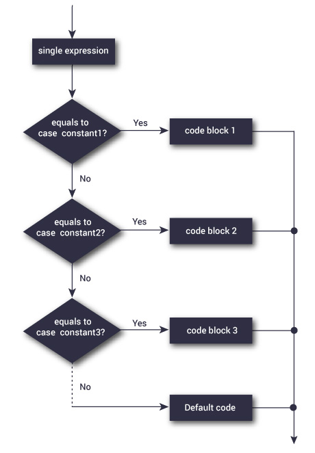

Learn C Programming
The Definitive Guide

.jpg)
.jpg)
.jpg)
C is a powerful general-purpose programming language. It is fast, portable and available in all platforms.
If you are new to programming, C is a good choice to start your programming journey.
This is a comprehensive guide on how to get started in C programming language, why you should learn it and how you can learn it.
What is C Programming? - The Basics
Before getting started with C programming, lets get familiarized with the language first.
C is a general-purpose programming language used for wide range of applications from
Operating systems like Windows and iOS to software that is used for creating 3D movies.
C programming is highly efficient. That’s the main reason why it’s very popular despite being more than 40 years old.
Standard C programs are portable. The source code written in one system works in another operating system without any change.
As mentioned, it’s a good language to start learning programming. If you know C programming, you will not just understand
how your program works, but will also be able to create a mental picture on how a computer works.
The fun begins: Your first C program
Why “Hello, World!” program?
“Hello, World!” is a simple program that displays “Hello, World!” on the screen. Since,
it’s a very simple program, it is used to illustrate the basic syntax of any programming language.
This program is often used to introduce programming language to a beginner. So, let’s get started.
#include
int main()
{
printf("Hello, World!\n");
return 0;
}
How “Hello, World!” program works?
Include stdio.h header file in your program
C programming is small and cannot do much by itself. You need to use libraries that are necessary to run the program. The stdio.h is a header file and C compiler knows the location of that file. To use the file, you need to include it in your program using #include preprocessor.
Why do you need stdio.h file in this program?
In this program, we have used printf() function which displays the text inside the quotation mark. Since printf() is defined in stdio.h, you need to include stdio.h.
The main() function
In C programming, the code execution begins from the start of main() function (doesn’t matter if main() isn’t located at the beginning).
The code inside the curly braces { } is the body of main() function. The main() function is mandatory in every C program.
int main()
{
}
The printf() function
The printf() is a library function that sends formatted output to the screen (displays the string inside the quotation mark). Notice the semicolon at the end of the statement.
In our program, it displays Hello, World! on the screen.
Remember, you need to include stdio.h file in your program for this to work.
C Tutorials
INTRODUCTION
Keywords & Identifier
Keywords are predefined, reserved words used in programming that have special meanings to the
compiler.
Keywords are part of the syntax and they cannot be used as an identifier.
For example:
C Keywords
| auto | doouble | int | struct |
|---|---|---|---|
| break | else | long | switch |
| case | enum | register | typedef |
| char | extern | return | union |
| continue | for | signed | void |
| do | if | static | while |
| default | goto | sizeof | volatile |
| const | float | short | unsigned |
Variables & Constants
In programming, a variable is a container (storage area) to hold data.
To indicate the storage area, each variable should be given a unique name (identifier).
Variable
names are just the symbolic representation of a memory location.
For example:
int number = 5; // integer variable
number = 5.5; // error
double number; // error
Here, the type of number variable is int. You cannot assign a floating-point (decimal)
value 5.5
to this variable. Also, you cannot redefine the data type of the variable to double.
By the way,
to store the decimal values in C, you need to declare its type to either double or float.
C Data Types
Basic Types
Here's a table containing commonly used types in C programming for quick access.
| Type | Size (bytes) | Format Specifier |
|---|---|---|
| int | at least 2, usually 4 | %d |
| char | 1 | %c |
| float | 4 | %f |
| double | 8 | %lf |
| Short int | 2 usually | %hd |
| Unsigned int | at least 2, usually 4 | %u |
| Long int | at least 4, usually 8 | %li |
| Long long int | at least 8 | %lli |
| Signed char | 1 | %c |
C Input/Output
C INPUT
In this tutorial, you will learn to use scanf() function to take input from the user, and printf()
function to display output to the user.
C OUTPUT
In C programming, printf() is one of the main output function. The function sends formatted
output to
the screen.
For example :
#include < stdio.h >
int main()
{
// Displays the string inside quotations
printf("C Programming");
return 0;
}
C Operators
C Arithematic Operators
| Operator | Meaning of Operator |
|---|---|
| + | addition or unary plus |
| - | subtraction or unary minus |
| * | multiplication |
| / | division |
| % | remainder after division (modulo division) |
Assignment Operators
| Operator | Example | Same as |
|---|---|---|
| = | a = b | a = b |
| += | a += b | a = a + b |
| -= | a -= b | a = a - b |
| *= | a *= b | a = a * b |
| /= | a /= b | a = a / b |
| %= | a %= b | a = a % b |
FLOW CONTROL
if...else Statement
C if Statement
The syntax of the if statement in C programming is:
if (test expression)
{
// statements to be executed if the test expression is true
}
C if...else Statement
The if statement may have an optional else block. The syntax of the if..else statement is:
if (test expression) {
// statements to be executed if the test expression is true
}
else {
// statements to be executed if the test expression is false
}
C for Loop
for Loop
The syntax of the for loop is:
for (initializationStatement; testExpression; updateStatement)
{
// statements inside the body of loop
}
for loop flowchart

C while Loop
while Loop
The syntax of the while loop is:
while (testExpression)
{
// statements inside the body of the loop
}
while loop flowchart

Break & Continue
C break
The break statement ends the loop immediately when it is encountered. Its syntax is:
break;
How break statement works...?

C continue
The continue statement skips the current iteration of the loop and continues with the next iteration.
Its syntax is :
continue;
How continue statement works...?

Switch Statement
C switch Statement
The switch statement allows us to execute one code block among many alternatives.
switch Statement Flowchart
FUNCTIONS
Functions Introduction
C Functions
A function is a block of code that performs a specific task.
Suppose, you need to create a program to create a circle and color it. You can create two
functions to solve this problem:
1. create a circle function
2. create a color function
Dividing a complex problem into smaller chunks makes our program easy to understand to reuse.

User-defined Function
C User-defined functions
A function is a block of code that performs a specific task.
C allows you to define functions according to your need. These functions are known as
user-defined functions. For example:
Suppose, you need to create a circle and color it depending upon the radius and color.
You can create two functions to solve this problem:
1. createCircle() function
2. color() function

Function Types
Types of User-defined Functions in C Programming
These 4 programs below check whether the integer entered by the user is a prime number or not.
The output of all these programs below is the same, and we have created a user-defined function
in each example. However, the approach we have taken in each example is different.
1. No arguments passed and no return value
2. No arguments passed but a return value
3. Argument passed but no return value
4. Argument passed and a return value
Recursion inC
C Recursion
A function that calls itself is known as a recursive function. And, this technique is known as recursion.

Variable Scope
C Storage Class
Every variable in C programming has two properties: type and storage class.
Type refers to the data type of a variable. And, storage class determines the scope, visibility
and lifetime of a variable.
There are 4 types of storage class:
1. automatic
2. external
3. static
4. register
Local Variable
The variables declared inside a block are automatic or local variables. The local variables exist
only inside the block in which it is declared.
Global Variable
Variables that are declared outside of all functions are known as external or global variables.
They are accessible from any function inside the program.
ARRAYS
C Array Introduction
C Arrays

How to initialize an array..?
Multidimensional Array
C Multidimensional Arrays
In C programming, you can create an array of arrays. These arrays are known as multidimensional arrays.
For example :
float x[3][4];
Here, x is a two-dimensional (2d) array. The array can hold 12 elements. You can think the array
as a table with 3 rows and each row has 4 columns.

Arrays & Functions
Pass arrays to a function in C
In C programming, you can pass en entire array to functions. Before we learn that,
let's see how you can pass individual elements of an array to functions.
// Program to calculate the sum of array elements by passing to a function
#include
float calculateSum(float age[]);
int main() {
float result, age[] = {23.4, 55, 22.6, 3, 40.5, 18};
// age array is passed to calculateSum()
result = calculateSum(age);
printf("Result = %.2f", result);
return 0;
}
float calculateSum(float age[]) {
float sum = 0.0;
for (int i = 0; i < 6; ++i) {
sum += age[i];
}
return sum;
}
String in C
C Programming Strings
In C programming, a string is a sequence of characters terminated with a null character \0.
For example :
char c[] = "c string";
When the compiler encounters a sequence of characters enclosed in the double quotation marks,
\ it appends a null character \0 at the end by default.
String Function
String Manipulations In C Programming Using Library Functions
You need to often manipulate strings according to the need of a problem.
Most, if not all, of the time string manipulation can be done manually but,
this makes programming complex and large.
To solve this, C supports a large number of string handling functions in the standard library "string.h".
Few commonly used string handling functions are discussed below:
| Function | Work of Function |
|---|---|
| strlen() | computes string's length |
| strcpy() | copies a string to another |
| strcat() | concatenates(joins) two strings |
| strcmp() | compares two strings |
| strlwr() | converts string to lowercase |
| strupr() | converts string to uppercase |
Teach Yourself to Code in C
Learn C from Programiz
Programiz offers dozens of tutorials and examples to help you learn C programming from scratch.
The tutorials are designed for beginners who do not have any prior knowledge of C
programming (or, any other programming languages). Each tutorial is written in depth with
examples and detailed explanation.
Recommended Books in C Programming
If you are serious about learning programming (any programming language including C),
you should get yourself a good book.
Granted, reading a 600 page long programming book takes a lot of time and patience. But,
you will get the big picture of programming concepts in the book which you may not find elsewhere.
Here are 3 books we personally recommend.
The C Programming Language (2nd Edition)
This book provides the complete guide to ANSI standard C language.

C Programming: A Modern Approach (2nd Edition)
Personally I believe, this is the best book for beginners

C Pocket Reference (1st Edition)
Don’t want to search pages and pages to look for a small information? Get this book.
11+
Partners
55+
Projects
100+
Happy Clients
100+
Meetings
Products
Certificates
Catalog
Master Track
Degrees
Community
Learners
Developers
Beta Testers
Translators
Corsetty
About
Careers
Partners
Help